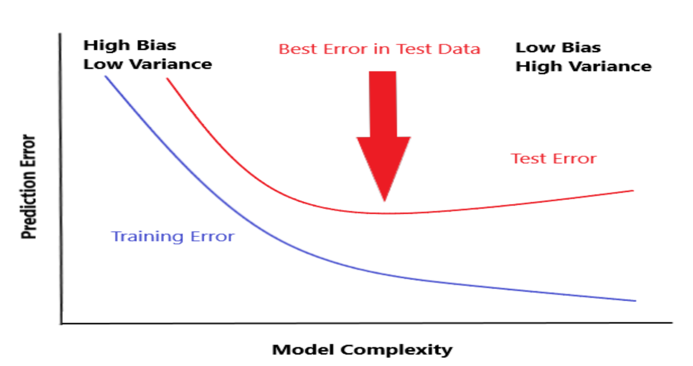
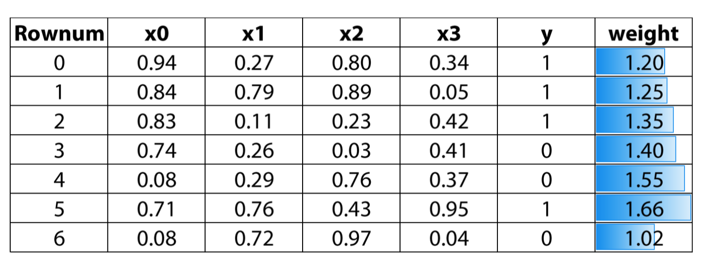
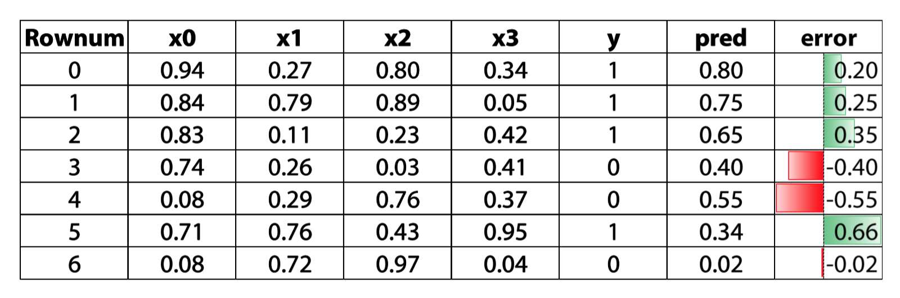
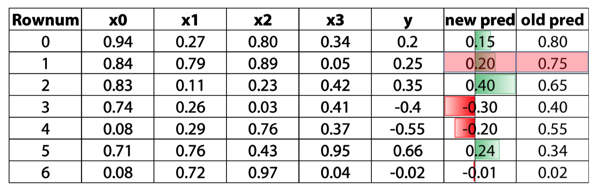
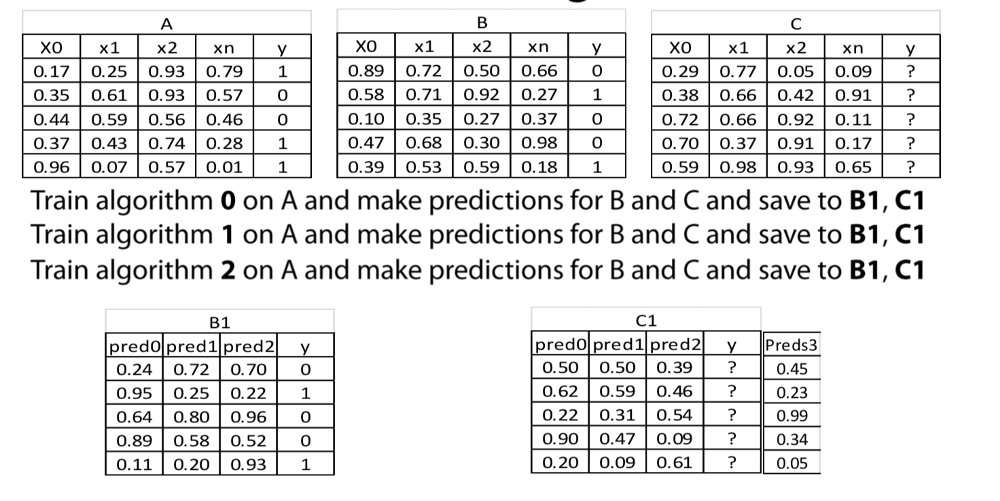
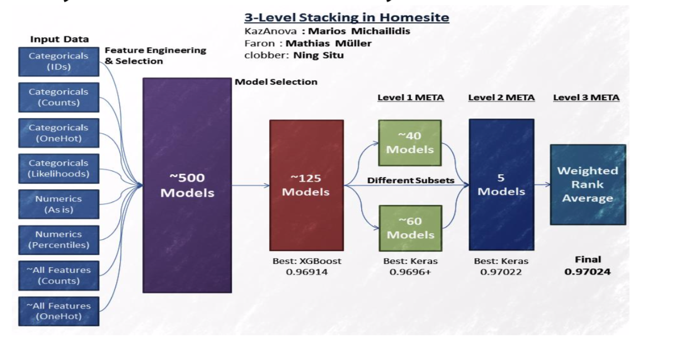

Ensemble methods
Ensemble methods means combining different machine learning models to get a better prediction
Averageing (or blending)
Weighted averaging
Conditional averaging
Bagging
What is bagging
Bagging means averaging slightly different versions of the same model to improve accuracy
Why bagging
There are 2 main sources of errors in modeling:
- Bias (underfitting)
- Variance (overfitting)
Bagging try to reduce the variance

Parameterss that control bagging
- Changing the seed
- Row sampling or bootstraping
- Shuffling
- Column sampling
- Model-specific parameters
- Number of models
- Parallelism
1 | model = RandomForestRegressor() |
Boosting
What is Boosting
A form of weighted averaging of models where each model is built sequentially via taking into account the past model performance
Main boosting types
- Weight based
- Residual based
Weighted based

Weighted based boosting parameters
- Learning rate
- Number of estimators
- Input model - can be anything that accepts weights
- Sub boosting type:
- AdaBoost
- LogitBoost
Residual based boosting


we use the error to get the direction, and update our prediction through that direction
Residual based boosting parameters
- Learning rate
- Number of estimators
- Row sampling
- Column (sub) sampling
- Input model - better be trees
- Sub boosting type:
- Fully gradient based
- Dart
- Implementation
- XGBoost
- LightGBM
- H2O’s GBM
- Catboost
- Sklearn’s GBM
Stacking
What is stacking?
Stacking means making prediction of a number of models in a hold-out set and than using a different(Meta) model to train on these prediction
Methology
- Split the train set into two disjoint sets (train and dev)
- Train several base learners on the first part
- Make predictions with the base learners on the dev set and test set
- using the predictions of dev set to train a meta model and make predictions on test set

1 | train,dev,y_train,y_dev = train_test_split(train,y_train, test_size = 0.2) |
Things to be mindful of
- With time sensitive data - respect time
- Diversity as important as performance(different model you choose need bring new information, no matter how weak the model is)
- Diversity
StackNet
A scalable meta modelling methology taht utilizes stacking to combine multiple models in a neural network architecture of multiple levels

How to train
- cannot use BP
- use stacking to link each model/node with target
- to extend to many levels, we can use KFold parameters
- No epochs - different connections instead
first level Tips
- Diversity based on algo
- 2-3 gradient boosted trees(xgboost, H2O, catboost)
- 2-3 Neural Net (keras, pyTorch)
- 1-2 ExtraTree/ Random Forest( sklearn)
- 1-2 Linear models as in Logistic/ridge regression, linearsvm(sklearn)
- 1-2 knn models(sklearn)
- 1 Factorization machine (libfm)
- 1 svm with nonlinear kernel if size/memory allows(sklearn)
- 1 svm with nonlinear kernel if size/memory allows(sklearn)
- Diversity based on input data
- Categorical features: One hot, label encoding, target encoding, frequency.
- Numberical features: outliner, binning, derivatives, percentiles, scaling
- Interactions: col1 */+-col2, groupby, unsupervied
- For classification target, we can use regression models in middle level
Subsequent level tips
- Simpler(or shallower) algo
- gradient boosted tree with small depth(2 or 3)
- linear models with high reglarization
- Extra Trees
- Shallow network
- Knn with BrayCurtis Distance
- Brute forcing a seach for best linear weights based on cv
- Feature engineering
- parwise differences between meta features
- row-wise statics like average or stds
- Standard feature selection techniques
- For evenry 7.5 models in previous level we add 1 in meta(empirical)
- Be mindful of target leakage
Validation schema
There are a number of ways to validate second level models (meta-models). In this reading material you will find a description for the most popular ones. If not specified, we assume that the data does not have a time component. We also assume we already validated and fixed hyperparameters for the first level models (models).
- Simple holdout scheme
- Split train data into three parts: partA and partB and partC.
- Fit N diverse models on partA, predict for partB, partC, test_data getting meta-features partB_meta, partC_meta and test_meta respectively.
- Fit a metamodel to a partB_meta while validating its hyperparameters on partC_meta.
- When the metamodel is validated, fit it to [partB_meta, partC_meta] and predict for test_meta.
- Meta holdout scheme with OOF meta-features
- Split train data into K folds. Iterate though each fold: retrain N diverse models on all folds except current fold, predict for the current fold. After this step for each object in train_data we will have N meta-features (also known as out-of-fold predictions, OOF). Let’s call them train_meta.
- Fit models to whole train data and predict for test data. Let’s call these features test_meta.
- Split train_meta into two parts: train_metaA and train_metaB. Fit a meta-model to train_metaA while validating its hyperparameters on train_metaB.
- When the meta-model is validated, fit it to train_meta and predict for test_meta.
- Meta KFold scheme with OOF meta-features
- Obtain OOF predictions train_meta and test metafeatures test_meta using b.1 and b.2.
- Use KFold scheme on train_meta to validate hyperparameters for meta-model. A common practice to fix seed for this KFold to be the same as seed for KFold used to get OOF predictions.
- When the meta-model is validated, fit it to train_meta and predict for test_meta.
- Holdout scheme with OOF meta-features
- Split train data into two parts: partA and partB.
- Split partA into K folds. Iterate though each fold: retrain N diverse models on all folds except current fold, predict for the current fold. After this step for each object in partA we will have N meta-features (also known as out-of-fold predictions, OOF). Let’s call them partA_meta.
- Fit models to whole partA and predict for partB and test_data, getting partB_meta and test_meta respectively.
- Fit a meta-model to a partA_meta, using partB_meta to validate its hyperparameters.
- When the meta-model is validated basically do 2. and 3. without dividing train_data into parts and then train a meta-model. That is, first get out-of-fold predictions train_meta for the train_data using models. Then train models on train_data, predict for test_data, getting test_meta. Train meta-model on the train_meta and predict for test_meta.
- KFold scheme with OOF meta-features
- To validate the model we basically do d.1 — d.4 but we divide train data into parts partA and partB M times using KFold strategy with M folds.
- When the meta-model is validated do d.5.
Validation in presence of time component
- KFold scheme in time series
In time-series task we usually have a fixed period of time we are asked to predict. Like day, week, month or arbitrary period with duration of T.- Split the train data into chunks of duration T. Select first M chunks.
- Fit N diverse models on those M chunks and predict for the chunk M+1. Then fit those models on first M+1 chunks and predict for chunk M+2 and so on, until you hit the end. After that use all train data to fit models and get predictions for test. Now we will have meta-features for the chunks starting from number M+1 as well as meta-features for the test.
- Now we can use meta-features from first K chunks [M+1,M+2,..,M+K] to fit level 2 models and validate them on chunk M+K+1. Essentially we are back to step 1. with the lesser amount of chunks and meta-features instead of features.
- KFold scheme in time series with limited amount of data
We may often encounter a situation, where scheme f) is not applicable, especially with limited amount of data. For example, when we have only years 2014, 2015, 2016 in train and we need to predict for a whole year 2017 in test. In such cases scheme c) could be of help, but with one constraint: KFold split should be done with the respect to the time component. For example, in case of data with several years we would treat each year as a fold.
Software
- StackNet (https://github.com/kaz-Anova/StackNet)
- Stacked ensembles from H20
- Xcessiv (https://github.com/reiinakano/xcessiv)